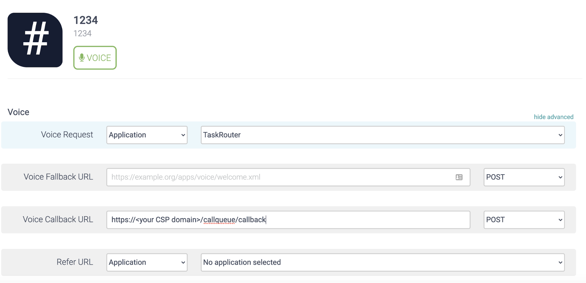

Task Router Overview
Introduction
Task Router is a skill based Task routing to Agent. Task can be generated from any channel, though as of today only voice is supported.
The following diagram explains how Task Router works.
| As of today only Voice (Call) Channel is supported. |
-
External event like Phone Call triggers the process
-
Phone call is handled by Core Platform Visual Designer or Application developed by developer
-
All the necessary information is collected. For example press 1 for Support and 2 for Sales. In Support press 1 for English Support and 2 for Japanese etc.
-
Visual Designer or Turnkey Application makes a call to Task Router’s API to create new Task and submit it to Workflow
-
-
Workflow will evaluate the Task attributes with configured TaskQueues and submit the Task in TaskQueue
-
TaskQueue will evaluate the next available Agent and route call to Agent.
Task Router consists of a WorkSpace that envelops Workers, TaskQueues, Tasks, Activities, Workflows.
Setting up Incoming Phone Number
To set up the Incoming Phone number in the Core Platform for Task Router, make sure “Voice Callback URL” points to Call-Queue Application. For example if Incoming Phone Number is 1234, the Callbak URL will be https://$DOMAIN/callqueue/callback. If you trying to set this via Core Platform Console, it should look like below (click on show advance)

To set this up via API please refer to the Incoming Phone Number API documentation.